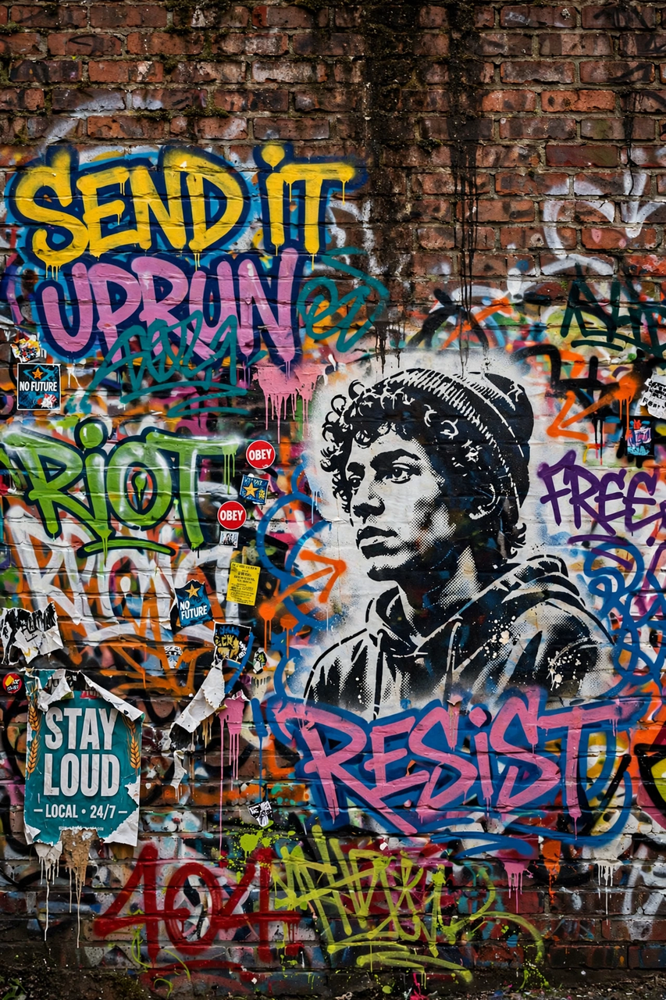

Wikipedia — The Free Encyclopedia

Graffiti (singular graffito) is writing or drawings made on a wall or other surface, usually without permission and within public view. It ranges from simple written words to elaborate wall paintings, and has existed since ancient times, with examples dating back to ancient Egypt, Greece and Rome. In modern usage the term is most associated with the spray-painted lettering culture that emerged in Philadelphia and New York City in the late 1960s and 1970s alongside hip hop culture.
Writers distinguish the quick signature tag, the larger two-colour throw-up, and the elaborate, multicoloured piece (short for masterpiece), often in the interlocking "wildstyle" lettering that outsiders find illegible. Stencil graffiti, pioneered by artists such as Blek le Rat and popularised by Banksy, and wheatpasted posters are related forms. Painting on subway trains — and the authorities' campaign to eradicate it — defined the culture's heroic age in New York.
Unauthorised graffiti is treated in most jurisdictions as vandalism and prosecuted accordingly, while property owners and cities spend heavily on removal. At the same time, graffiti-derived street art has entered galleries and auctions: Jean-Michel Basquiat and Keith Haring moved from the street to the art world in the 1980s, and Banksy's works sell for millions. Many cities now commission murals and maintain legal walls, and the debate over where vandalism ends and public art begins continues.